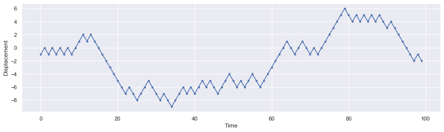
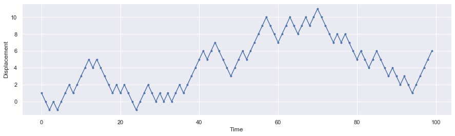
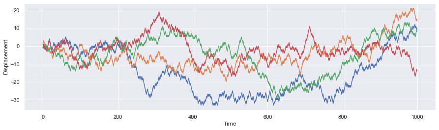

Random Walk
import numpy as np
import random as random
import matplotlib.pyplot as plt
import seaborn as sns
sns.set()
Random walk in one dimension
To create reandom walk in 1D, we generate random step 1, -1 and move in one direction. Since we are taking one direction and time to create a plot. It is displayed in plot below. Lets try to implement random walk with direct implementation with for loop and with function walk1D.
Random Walk 1D (Direct)
'''X stores 1-D coordinate'''
X = []
'''T stores time coordinate'''
T = []
'''starting point'''
x = 0
'''length of each step'''
d = 1
'''iteratefor N steps'''
for t in range(100):
'''Walk one step ahead'''
x = x + d*random.choice([-1,1])
'''collect time'''
T.append(t)
'''collect position'''
X.append(x)
'''Make a plot'''
plt.figure(figsize = [15,4])
plt.scatter(T,X,marker = '.')
plt.plot(T,X)
plt.xlabel("Time")
plt.ylabel('Displacement')
plt.grid(True)
plt.show()

Random Walk 1D (Function)
def walk1D(x,N,d):
'''This function returns the space 'X' and time 'T' for random walk in 1D
x: initial position
N: total number of steps
d: step length'''
'''X stores 1-D coordinate'''
X = []
'''T stores time coordinate'''
T = []
'''iteratefor N steps'''
for t in range(N):
'''Walk one step ahead'''
x = x + d*random.choice([-1,1])
'''collect time'''
T.append(t)
'''collect position'''
X.append(x)
return X,T
'''Implement function to get data'''
X,T = walk1D(x=0,N=100,d=1)
'''Make a plot'''
plt.figure(figsize = [15,4])
plt.scatter(T,X,marker = '.')
plt.plot(T,X)
plt.xlabel("Time")
plt.ylabel('Displacement')
plt.grid(True)
plt.show()

Random Walk 1D (Class)
class Walker1D(object):
'''
This is a class to create on dimentional walk:
x0 : initial position
d : step size
N : number of steps in random walk
'''
def __init__(self,N,d,x0):
self.N = N
self.X = []
self.d = d
self.x0 = x0
def walk1D(self):
'''note initial position'''
x = self.x0
k = 0
while k < self.N:
'''Walk one step ahead'''
x = x + self.d*random.choice([-1,1])
'''collect position'''
self.X.append(x)
k = k+1
return self.X
- Let's generate 4 different random walks of step 1000 each
X1 = Walker1D(N =1000,d = 1,x0=0).walk1D()
X2 = Walker1D(N =1000,d = 1,x0=0).walk1D()
X3= Walker1D(N =1000,d = 1,x0=0).walk1D()
X4 = Walker1D(N =1000,d = 1,x0=0).walk1D()
T = [i for i in range(len(X1))]
import json
with open ('data/rwalk4.json', 'w')as f4:
json.dump([X1,X2,X3,X4,T],f4)
- Let's visualize them
plt.figure(figsize = [15,4])
plt.plot(T,X1)
plt.plot(T,X2)
plt.plot(T,X3)
plt.plot(T,X4)
plt.xlabel("Time")
plt.ylabel('Displacement')
plt.grid(True)
plt.show()

Random Walk in 2D
Lets repeat the function implementation for 2D Random Walk.
Random Walk 2D (Function)
We will create two functions move2D to move one step and walk2D to walk multiple steps.
def move2D(xi,yi):
'''
This function choose a direction and walk one step in 2D
'''
direction = random.choice(['x','y'])
if direction == 'x':
r = random.choice([-1,1])
if r ==1:xf = xi+1
else: xf = xi -1
yf = yi
if direction == 'y':
r = random.choice([-1,1])
if r ==1:yf = yi+1
else: yf = yi -1
xf = xi
return xf,yf
def walk2D(N,pos):
'''
This function walks N step in 2d implementing move2D
'''
'''coordinate collectors'''
X =[] ; Y =[]
'''from where to start'''
x0 = pos[0] ; y0 = pos[0]
k=0
while k < N:
'''move a step'''
x,y = move2D(x0,y0)
'''collect X coordinate'''
X.append(x)
'''collect Y coordinate'''
Y.append(y)
'''set previous position for next step'''
x0 = x
y0 = y
k = k+1
return X,Y
- Lets create a 3 different Random walk in 2D
N = 10000
U = walk2D(N,[0,0])
V = walk2D(N,[0,0])
W = walk2D(N,[0,0])
plt.figure(figsize = [8,8])
plt.plot(U[0],U[1],"-")
plt.plot(V[0],V[1],"-")
plt.plot(W[0],W[1],"-")
#plt.axis([-100, 100, -100, 100])
plt.xlabel("x-axis")
plt.ylabel("y-axis")
plt.grid(True)
plt.title("Brownian motion in 2D")
plt.show()

Random Walk in 3D
Similarly Random Walk in 3D can be created and visualized with .gif file as shown below